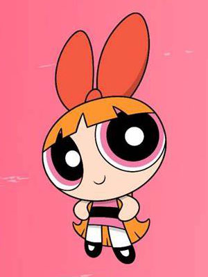

Personality and Habits
Each of the girls has their own unique characteristics.
Blossom
Blossom serves as the strong-willed leader of the trio as she is the most mentally mature. Her personality is “everything nice”. She has long red-orange hair with a red bow and wears a pink dress. She is the most intelligent and level-headed among the three. When not engaged in a fight, Blossom enjoys video games, reading and playing outside.
Bubbles
Bubbles is the kindest and sweetest among the girls making her personality ingredient as “sugar”. Her signature color is blue with blonde hair in pigtails. She is often referred to as joy and laughter. She tends to be over-emotional and has childlike curiosity.
Buttercup
Buttercup is the toughest fighter on the other hand making her personality as “spice”. Her signature color is green and has a short black hair. She is often described as a hard-headed one and mostly gets into fights without a plan. Due to her quick-tempered nature, she often gets into fights with her sisters.


{kind=link}
{kind=link}
{kind=link}
{kind=link}